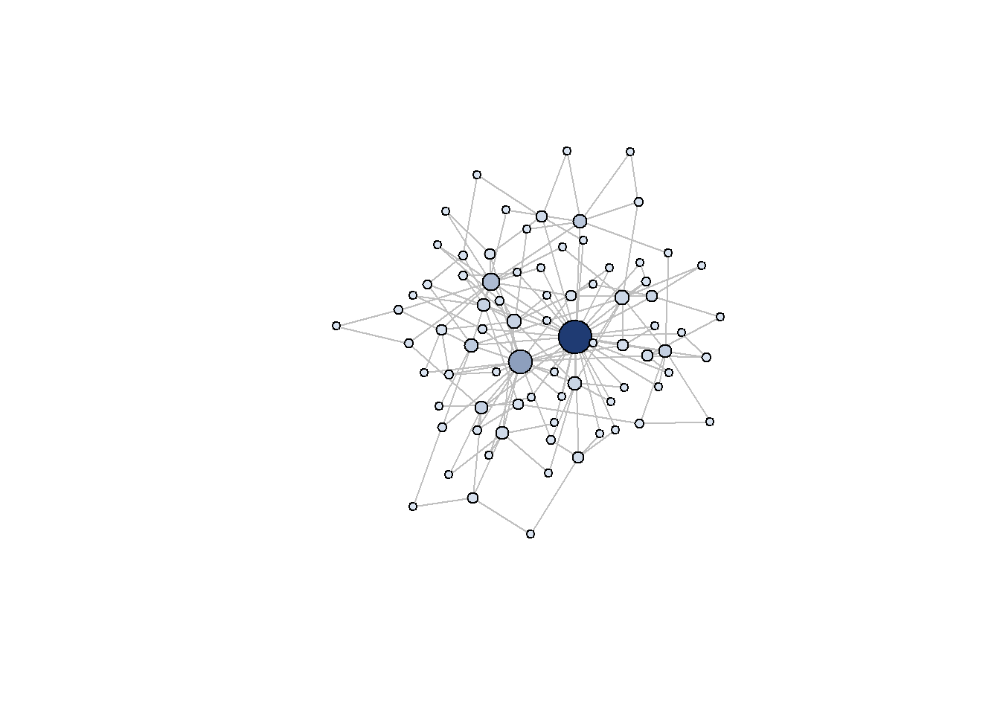
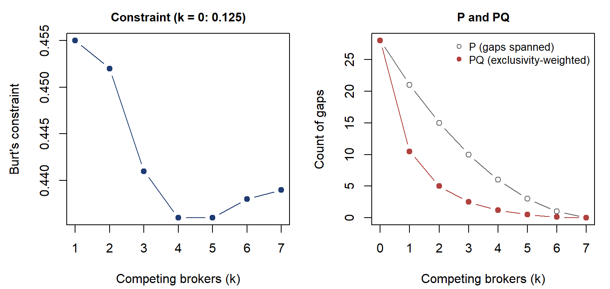
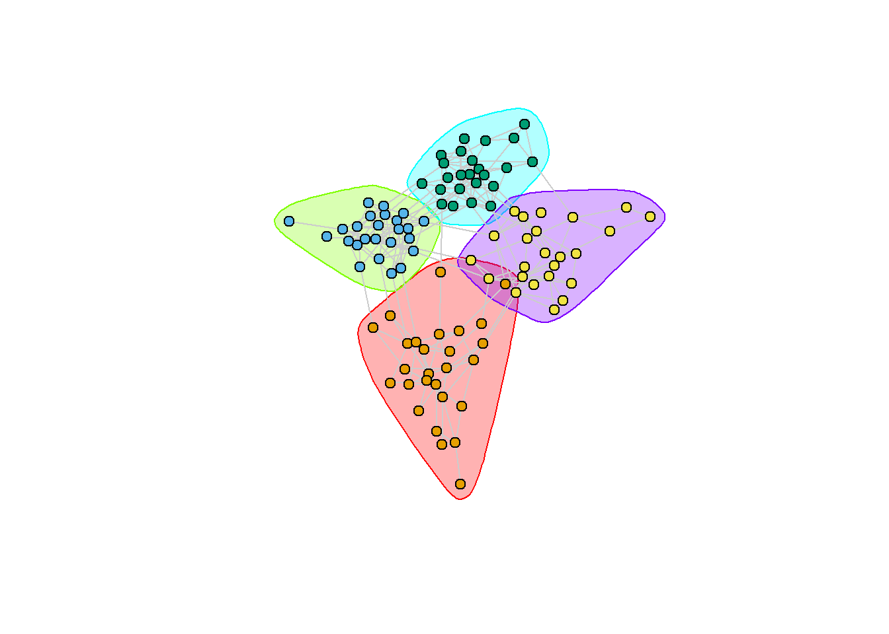
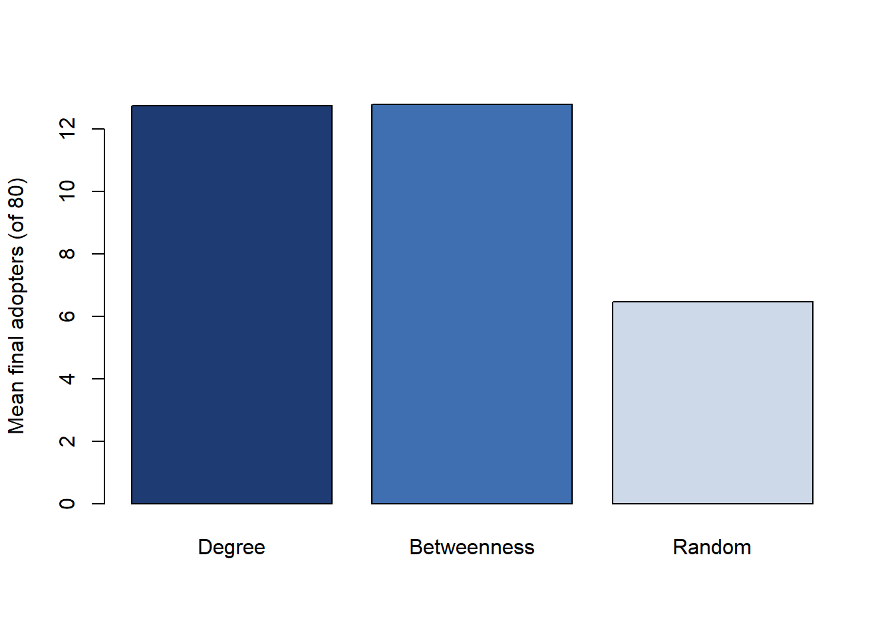

flowchart LR RD["Relational data<br/>(friendships, co-purchases, referrals, co-mentions)"] RD --> GR["Graph<br/>(nodes and edges)"] GR --> FE["Network features<br/>(centrality, community, embeddings)"] FE --> US["Uses<br/>(description, prediction, causal claims)"]
51 Networks and Graph Data
Most of the data structures the preceding chapters relied on are rectangular: a customer is a row, an attribute is a column, and rows are treated as exchangeable draws from a population. Network data violate that convenience at the root. The unit of analysis is not the isolated individual but the relation between individuals, and the informative quantity is the pattern of relations across the whole system. A customer who buys, adopts, churns, or recommends does so embedded in a web of friends, co-purchasers, followers, and referrers, and that embedding carries marketing signal that no amount of demographic enrichment recovers. The object that encodes this structure is a graph: a set of nodes (consumers, products, brands, sellers) and a set of edges (friendships, co-purchases, referrals, co-mentions) connecting them.
This chapter treats the graph as a first-class marketing data type, parallel to text (Chapter 46) and images (Chapter 48) in the unstructured-and- multimodal family. As with those modalities, the analytic arc is the same: an unstructured artifact (here, a relational structure rather than a document or a photo) is turned into machine-readable features, and those features are then used for description, prediction, or causal claims. And as with those modalities, the central econometric caution recurs in a network-specific and unusually severe form: a feature extracted from the graph, such as a node’s centrality or its neighbors’ behavior, is a generated regressor whose error is correlated with the outcome in ways that mimic the very effect the analyst wants to measure. The identification of social influence is the hardest version of this problem in all of empirical marketing, and it earns its own section below.
The chapter proceeds from use to method to practice. It opens with the marketing applications that motivate graph thinking. It then develops the formal representation of a graph and the centrality measures that summarize a node’s position, with a runnable igraph demonstration on simulated data, and the ego-network measures of brokerage and structural holes. It treats community detection, the unsupervised discovery of cohesive subgroups. It then confronts the contagion-versus-homophily identification problem head on, because no honest account of network marketing can avoid it. It develops diffusion models and simulates an independent-cascade process over a graph. It surveys the learned- representation frontier, graph embeddings and graph neural networks, keeping the deep-learning specifics conceptual but clearly labeled. It closes with industry and production practice (recommendation, fraud, influencer selection) and a frontier section on where the field is moving. Figure 51.1 previews the shared analytic arc these sections instantiate: relational data become a graph, the graph yields features, and those features serve description, prediction, or causal claims.
51.1 Why Networks Matter in Marketing
The marketing relevance of graph structure is not a single idea but a family of them, unified by the premise that a consumer’s value, behavior, and reachability depend on the consumers around them.
Social networks, word of mouth, and contagion. The oldest motivation is that products spread through social ties. A consumer is more likely to adopt when adopters sit nearby in the social graph, whether because of genuine influence, shared exposure, or similarity. The word-of-mouth literature in marketing has long modeled this spread formally; Goldenberg, Libai, and Muller (2001) used a complex-systems simulation of the underlying person-to-person process to show how the structure of “weak” and “strong” ties governs the macro-level diffusion curve, and a large empirical literature, surveyed below, estimates contagion from observed adoption sequences over real ties. The contagion premise is also what makes misinformation a network phenomenon: Vosoughi, Roy, and Aral (2018) showed that false news diffuses faster, farther, and more broadly than true news through the Twitter retweet graph, a finding that is fundamentally about diffusion structure rather than content alone.
Co-purchase and recommendation graphs. A second, entirely different graph arises without any social tie at all. Connect two products when they are frequently bought together, or connect a customer to every product they purchased, and the resulting co-purchase (or bipartite customer-product) graph is the substrate of modern recommendation. “Customers who bought this also bought that” is a statement about the neighborhood of a node in a co-purchase graph, and item-to-item collaborative filtering, the algorithm that powered Amazon’s recommendations, is literally a computation over this graph (Linden, Smith and York 2003, IEEE Internet Computing 7(1), 76–80, doi:10.1109/MIC.2003.1167344). The graph here is a tool for prediction and retrieval, and the identification anxieties of the social-contagion literature are largely absent.
Customer-referral networks and seeding. Referral programs make the graph a managed asset: a firm rewards existing customers for recruiting new ones, and the chain of who-referred-whom is a directed network whose structure determines program value. The adjacent question, whom to seed with free product or early access to maximize spread, turns network position into a targeting variable. Hinz et al. (2011) compared seeding strategies empirically and found that seeding well-connected “hubs” outperforms seeding random or “fringe” customers, a result that operationalizes centrality as a marketing decision variable. The structure of referral and affiliate networks on the commercial web has itself been modeled as an outcome of strategic link formation by Katona and Sarvary (2008).
Influencer identification. Closely related is the problem of finding the individuals whose activity moves the system. The naive answer, “the most connected person,” is both intuitive and contested. Trusov, Bodapati, and Bucklin (2010) developed a method to identify genuinely influential users in an internet social network by modeling whose activity predicts others’ subsequent activity, distinguishing influence from mere connectedness. Watts and Dodds (2007) (Watts and Dodds 2007, Journal of Consumer Research 34(4), 441–458, doi:10.1086/518527) challenged the “influentials hypothesis” itself, arguing through simulation that large cascades are often driven by a critical mass of easily influenced ordinary people rather than by rare special individuals, a caution that remains central to how marketers should read centrality.
Customer value, retention, and CRM spillovers. A consumer’s economic value to a firm is partly a network quantity. Social ties shape churn—a customer whose connections defect is more likely to defect (Nitzan and Libai 2011)—and the value of participation in a firm-sponsored community spills over into the spending of those who merely observe it, the “social dollars” quantified by Manchanda, Packard, and Pattabhiramaiah (2015). CRM actions, too, propagate along ties: Ascarza et al. (2017) show that a retention campaign aimed at target customers also moves the behavior of their untreated social neighbors, so the campaign’s true return is a network effect that target-only accounting misses. The classic statement of this logic is Hill, Provost, and Volinsky (2006), who show that consumers linked (by communication ties) to existing customers are far likelier to adopt, making explicit consumer networks a powerful targeting variable. Firm-generated content on social platforms engages users through the same network substrate (Lee, Hosanagar, and Nair 2018).
Referral economics and social-commerce value. Referral programs turn the graph into a managed asset whose returns can be measured: referred customers are more valuable and loyal than others (Schmitt, Skiera, and Van den Bulte 2011), and Van den Bulte et al. (2018) decompose why, separating the selection (homophily) and influence channels through which referral programs convert social capital into economic capital. In social commerce, a seller’s position in the network generates value directly (Stephen and Toubia 2010), and the motives for contributing the content that builds these networks—intrinsic versus status/image—are themselves measurable (Toubia and Stephen 2013). Whether observed clustering reflects genuine word of mouth or mere observational learning is itself an identification question (Chen, Wang, and Xie 2011), and the interplay of social influence with the firm’s own direct marketing unfolds dynamically over the adoption process (Risselada, Verhoef, and Bijmolt 2014). The diffusion consequences of network position are not uniformly positive: hubs play a distinctive role in adoption (Goldenberg et al. 2009), yet network externalities can also chill diffusion when consumers wait for others to commit first (Goldenberg, Libai, and Muller 2010).
Brand co-mention and semantic networks. Finally, graphs need not connect people or products at all. Connect two brands when they are mentioned together in reviews, social posts, or search sessions, and the resulting co-mention network is a map of market structure: tightly connected brand clusters are competitive sets, and a brand’s position reveals its substitutes and complements. This is the network-analytic cousin of the text-mining market-structure maps discussed in Chapter 46, and it lets an analyst recover perceptual structure from unstructured co-occurrence rather than from surveys.
Across these applications the same primitive recurs: a position in a graph is a feature, and the configuration of the graph is information. Figure 51.2 sorts these applications by the kind of graph each builds, since the nodes and edges differ sharply across them.
flowchart TB G["Marketing networks"] G --> SO["Social / word-of-mouth<br/>(people to people)"] G --> CP["Co-purchase / recommendation<br/>(product to product, customer to product)"] G --> RE["Referral / seeding<br/>(directed: who referred whom)"] G --> BC["Brand co-mention / semantic<br/>(brand to brand)"] SO --> SOu["Contagion, influence,<br/>churn spillover"] CP --> CPu["Recommendation, retrieval"] RE --> REu["Seeding, referral value"] BC --> BCu["Market-structure maps"]
The rest of the chapter develops the methods that turn that information into measures.
51.2 Graph Representation and Centrality
A graph \(G = (V, E)\) is a set of nodes \(V\) and a set of edges \(E \subseteq V \times V\). Edges may be undirected (a Facebook friendship is mutual) or directed (a Twitter follow is one-way; an A-referred-B link has an arrow), and they may be weighted (the number of co-purchases, the strength of a tie). The workhorse algebraic representation is the adjacency matrix \(A\), an \(n \times n\) matrix with \(A_{ij} = 1\) (or the edge weight) when an edge runs from \(i\) to \(j\) and \(0\) otherwise. Almost every structural quantity in this chapter is a function of \(A\). For sparse real-world graphs, where each node connects to a tiny fraction of all others, \(A\) is stored as an edge list rather than a dense matrix, but the mathematics is unchanged.
The most basic summary of a node is its degree, the number of edges incident to it (\(d_i = \sum_j A_{ij}\)). In a directed graph this splits into in-degree (how many point to \(i\); a proxy for received attention or popularity) and out-degree (how many \(i\) points to; a proxy for activity). Degree is the crudest notion of importance, and its crudeness is exactly the point of the richer centrality measures, each of which formalizes a different theory of what makes a node matter.
Betweenness centrality measures how often a node lies on shortest paths between other pairs of nodes: \[ C_B(i) = \sum_{s \ne i \ne t} \frac{\sigma_{st}(i)}{\sigma_{st}}, \tag{51.1}\] where \(\sigma_{st}\) is the number of shortest paths from \(s\) to \(t\) and \(\sigma_{st}(i)\) the number passing through \(i\). A high-betweenness node is a broker sitting on the bridges between otherwise separated regions; in marketing terms, a broker controls the flow of information across communities and is a candidate “weak tie” connector in the sense of the word-of-mouth literature.
Brokerage need not be defined on the graph of who knows whom. Mell, Jang, and Chai (2021) introduce temporal brokerage, a position in a team’s temporal structure that bridges subgroups sharing little or no overlap in working hours. It is not a formal role and need not coincide with high betweenness in the communication graph, yet it attracts the same coordination work, because the temporal broker is the only member who can relay between subgroups that cannot speak to each other directly. The consequences are two-sided, greater integrative complexity on one hand and a heavier workload on the other, and they spill beyond the focal team into the broker’s other commitments. For measurement the lesson is that the adjacency matrix behind Equation 51.1 encodes one relation at a time, and the bridge that matters substantively may be defined on a different one, such as overlap in working hours, shared language, or shift schedule. Choosing the edge is choosing the theory.
Eigenvector centrality formalizes the recursive idea that a node is important if its neighbors are important. It is the leading eigenvector of the adjacency matrix: \[ A\,\mathbf{x} = \lambda_{\max}\,\mathbf{x}, \tag{51.2}\] so a node’s score is proportional to the sum of its neighbors’ scores. PageRank is a directed, damped variant of the same idea. Eigenvector centrality captures prestige: being connected to other well-connected nodes, not merely to many nodes. The three measures can disagree sharply, and the disagreement is informative. A node can have high degree but low betweenness (a popular member buried inside one tight cluster), or modest degree but high betweenness (a lone bridge between two cliques). Choosing a centrality measure is therefore choosing a theory of influence, not a neutral preprocessing step.
The runnable demonstration below builds a simulated graph and computes all three. The package is the maintained igraph, the standard for network analysis in R. The graph is generated by preferential attachment (the Barabási-Albert model), which produces the heavy-tailed degree distribution characteristic of real social and co-purchase networks: a few hubs and a long tail of sparsely connected nodes.
Code
library(igraph)
set.seed(20260622)
# --- Build a simulated scale-free network (Barabasi-Albert) ---
# Interpretable as a social graph (who-follows-whom) or, with edges read as
# "frequently bought together," a product co-purchase graph.
g <- sample_pa(n = 80, power = 1.1, m = 2, directed = FALSE)
V(g)$name <- paste0("u", seq_len(vcount(g)))
# --- Centrality measures (all functions of the adjacency structure) ---
deg <- degree(g)
btw <- betweenness(g, normalized = TRUE)
eig <- eigen_centrality(g)$vector
cent <- data.frame(
node = V(g)$name,
degree = deg,
betweenness = round(btw, 3),
eigenvector = round(eig, 3)
)
# Show the five highest-degree nodes and how they rank on the other measures
top_deg <- head(cent[order(-cent$degree), ], 5)
cat("Top-5 nodes by degree:\n")
#> Top-5 nodes by degree:
print(top_deg, row.names = FALSE)
#> node degree betweenness eigenvector
#> u1 34 0.538 1.000
#> u3 21 0.218 0.656
#> u7 13 0.124 0.387
#> u9 9 0.039 0.191
#> u10 9 0.051 0.216
# The top node by EACH measure can differ:
cat("\nMost central node by measure:\n")
#>
#> Most central node by measure:
cat(" degree :", cent$node[which.max(cent$degree)], "\n")
#> degree : u1
cat(" betweenness:", cent$node[which.max(cent$betweenness)], "\n")
#> betweenness: u1
cat(" eigenvector:", cent$node[which.max(cent$eigenvector)], "\n")
#> eigenvector: u1
# Rank correlation between degree and betweenness: high but not 1,
# which is exactly why brokers and hubs are distinct managerial targets.
cat("\nSpearman corr(degree, betweenness):",
round(cor(deg, btw, method = "spearman"), 3), "\n")
#>
#> Spearman corr(degree, betweenness): 0.869
# --- Visualize ---
node_col <- colorRampPalette(c("#d9e3f0", "#1f3b73"))(100)[
as.integer(cut(btw, breaks = 100, include.lowest = TRUE))]
plot(g,
vertex.size = 4 + 14 * (deg / max(deg)),
vertex.color = node_col,
vertex.label = NA,
edge.color = "grey75",
layout = layout_with_fr(g))
The output makes the conceptual point operational. The Spearman correlation between degree and betweenness is high but well below one, and the single most central node differs across measures. A seeding or influencer program that targets “the most connected user” is implicitly committing to the degree theory of influence; if the real mechanism is brokerage across communities, betweenness is the right target, and the two will recommend different people.
51.3 Brokerage and Structural Holes
Betweenness (Equation 51.1) finds brokers by counting shortest paths across the whole graph. A second tradition, older in sociology and now central in strategy and organization research, asks a more local question: are a node’s own contacts connected to one another? Its starting point is Granovetter (1973), who argued that the overlap of two people’s friendship networks rises with the strength of the tie between them, so that weak ties are the ones that link otherwise separate groups and carry information between them. Burt (1992) moved the argument from the tie to the position. A structural hole is a disconnection between two of ego’s nonredundant contacts, and bridging such holes yields information benefits (access to nonredundant information) and control benefits (the ability to deal with parties who cannot easily deal with each other) (Burt 1997). The control benefit is the tertius gaudens strategy of a broker who plays contacts off against one another for his or her own benefit (Obstfeld 2005). The opposing view locates advantage in closure, a network in which contacts are tied to one another: Coleman (1988) describes how closure facilitates two of the forms social capital takes, obligations and expectations on the one hand and effective social norms on the other. Much of the subsequent literature is an argument about when each view holds, and Burt, Kilduff, and Tasselli (2013) review it with network advantage as the organizing lens, tracing advantage to information breadth, timing, and arbitrage.
51.3.1 Burt’s measures
Burt’s measures are computed on the ego network. Let \(N(i)\) be ego \(i\)’s set of contacts, \(N_i = |N(i)|\), and let \(p_{ij} = (a_{ij} + a_{ji}) / \sum_{k}(a_{ik} + a_{ki})\) be the proportion of \(i\)’s relational investment directed to \(j\), which reduces to \(p_{ij} = 1/N_i\) in a binary network. Constraint measures how far ego’s investment is concentrated, directly or through mutual contacts, on contacts who are themselves connected: \[
c_i = \sum_{j \in N(i)} \Big( p_{ij} + \sum_{q \ne i, j} p_{iq}\, p_{qj} \Big)^2 .
\tag{51.3}\] The first term inside the parentheses is ego’s direct investment in \(j\); the second is the investment that reaches \(j\) indirectly through a third contact \(q\). Constraint is therefore high when ego has few contacts, when tie strength is concentrated on a few of them, and when those contacts are tied to one another, and lower constraint is read as more structural holes (Borgatti and Everett 2026). Burt’s general formula also weights each term by an exogenous concentration factor, which virtually all studies set to one (Borgatti and Everett 2026). In igraph::constraint() the proportions \(p_{qj}\) are computed over all of \(q\)’s ties (the “whole network” convention) rather than over \(q\)’s ties inside ego’s network; the two conventions coincide when a network contains only ego and its contacts.
The second measure, effective size, is the number of contacts discounted for their redundancy with one another: \[ \mathrm{ES}_i = \sum_{j \in N(i)} \Big( 1 - \sum_{q \ne i, j} p_{iq}\, m_{jq} \Big) \;=\; N_i - \frac{2\,t_i}{N_i} \quad \text{(binary data)}, \tag{51.4}\] where \(m_{jq}\) is \(j\)’s tie to \(q\) divided by \(j\)’s strongest tie to anyone and \(t_i\) is the number of ties among ego’s contacts. The binary simplification, due to Borgatti (1997, Connections 20(1): 35–38), shows that effective size is network size minus the average degree of the alters within the ego network (Everett and Borgatti 2020). It equals \(N_i\) when no contacts are tied and 1 when every contact is tied to every other, and efficiency is effective size divided by \(N_i\) (Burt 1992).
A different formalization ties brokerage to group membership rather than to ego-network density. Gould and Fernandez (1989) partition actors into mutually exclusive groups and classify every open two-path \(a \to b \to c\) (one in which \(a\) has no direct tie to \(c\)) by the group memberships of the three actors. The partition yields five distinct roles for the broker \(b\): a coordinator mediates between two members of its own group; an itinerant broker mediates between two members of a single group to which it does not belong; a gatekeeper passes a contact from an outsider into its own group; a representative passes a contact from its own group to an outsider; and a liaison connects two different groups, neither of them its own. Gould and Fernandez give quantitative measures of each role and a test of whether occupancy of a role exceeds what a random distribution of exchange relations would produce; the sna package’s brokerage() function implements the counts. The roles read naturally onto marketing structures. A distributor that carries a manufacturer’s offer into its own retail network occupies the gatekeeper position, and a key-account manager who carries the firm’s offer to a customer’s buying center acts as a representative.
51.3.2 What the evidence shows
The canonical positive evidence is Burt (2004). Among managers in a large American electronics company, compensation, positive performance evaluations, promotions, and good ideas were disproportionately held by people whose networks spanned structural holes, and between-group brokers were more likely to express ideas, less likely to have them dismissed, and more likely to have them judged valuable. The mechanism is that opinion and behavior are more homogeneous within than between groups, so a person connected across groups sees options that others do not. The value of that position is contingent. Burt (1997) shows that it is especially high for managers with few peers doing the same work, and Burt (2007) finds that brokerage benefits are concentrated in the immediate network, with secondhand brokerage across indirect contacts often worth little. The content of ties matters too: Podolny and Baron (1997) find that mobility is enhanced by a large, sparse network of informal ties for acquiring information and resources, whereas well-defined performance expectations are more likely to arise from a small, dense network.
The record is mixed once the outcome and the setting change. In the international chemicals industry, Ahuja (2000) finds that direct and indirect collaborative ties raise a firm’s subsequent innovation output but that more structural holes in the interfirm collaboration network lower it. Among Canadian mutual fund companies, by contrast, innovative firms that also bridge structural holes earn a further performance boost (Zaheer and Bell 2005). For investment banks advising on U.K. mergers and acquisitions, structural holes increase status accumulation but dampen market performance, because open networks supply information about new opportunities while limiting information about partners’ cooperativeness (Shipilov and Li 2008). Cohesion and brokerage are not simple opposites. Reagans and McEvily (2003) find that both social cohesion around a tie and network range ease knowledge transfer, Fleming, Mingo, and Chen (2007) show across 35,400 inventors that collaborative brokerage helps generate an idea but hampers its diffusion and use by others, and Tortoriello and Krackhardt (2010) find no advantage to bridging per se among 276 R&D scientists and engineers, only to bridging ties that are Simmelian, that is, embedded in a three-person clique. Aral and Van Alstyne (2011) add a diversity-bandwidth trade-off. A structurally diverse network raises novelty at the cost of thinner information flow, so in e-mail and network data from an executive recruiting firm bridging ties sometimes delivered less novel information, depending on how much contacts’ information overlaps, how deep their topical knowledge is, and how fast it refreshes.
How brokers broker is a separate question. Obstfeld (2005) contrasts the tertius gaudens with the tertius iungens (“third who joins”), who introduces disconnected people or coordinates connected ones, and finds that a tertius iungens orientation, dense networks, and diverse social knowledge predict involvement in innovation in an automotive engineering division. Quintane and Carnabuci (2016) reconcile the two strategies over time with e-mail relational-event data. When brokering through short-term interactions outside their long-term relationships, brokers are more likely than densely embedded actors to intermediate the information flow themselves; when brokering through their long-term ties, they are more likely to facilitate a direct exchange between the brokered parties. Brokers also affect the people around them. In the French television game show industry, hubs, the brokers who act as the main interface between their own network community and others, generate positive externalities for neighbors in creativity-focused roles and negative ones for neighbors in efficiency-focused roles (Clement, Shipilov, and Galunic 2018). Stovel and Shaw (2012) stress the same duality at the societal level: brokerage eases interaction and economic activity, but it also breeds exploitation, corruption, and the accumulation of power.
Finally, brokerage positions are contested and endogenous. In Italian television production, the structural holes a team spans originate in the prior status and centrality of the teams its members came from, and spanning holes is associated with larger audiences (Zaheer and Soda 2009). In a game-theoretic model of network formation in which every actor strives for structural holes, the predominant stable networks distribute benefits evenly, so no one keeps a structural advantage in the long run (Buskens and Rijt 2008). Ryall and Sorenson (2007) reach a parallel conclusion with a biform game: a broker earns an advantage only if no substitutes exist for the connections it offers or the value it creates, if it intermediates more than two parties, and if interdependence does not lock it into a fixed pattern of exchange, and when actors form relations strategically, profitable intermediation survives only under strict assumptions of unilateral action. Substitutability is exactly what the next development puts at the center of measurement.
51.3.3 Opportunity versus exclusivity
Constraint has been the workhorse operationalization of structural holes, and Johnson and Sasson (2026) argue that it does not measure what it is usually taken to measure. Using formal, computational, and empirical analyses, they conclude that constraint almost exclusively operationalizes dyadic constructs, namely available alternatives, exchange-partner diversity, and concentration, rather than the broader network structure that structural-hole theory invokes. As Borgatti and Everett (2026) summarize the evidence, in large unweighted simulated networks the variance of inverse degree alone averages about 110 percent of the variance of constraint (possible because inverse degree covaries negatively with the closure terms), and in replications of two earlier studies, one of them the investment-bank study of Shipilov and Li (2008), constraint correlates .94 and .99 with the Herfindahl index of ego’s tie distribution.
Borgatti and Everett (2026) accept that constraint has a measurement problem but locate it elsewhere. Degree belongs in a brokerage measure by design, because contacts create the pairs across which brokerage can occur: an ego with eight mutually disconnected contacts has more brokerage occasions than one with three. The real failure is substitutability. Their diagnostic holds degree fixed at eight. With no ties among the alters, ego’s constraint is .125. Tying one alter to every other alter creates a competing broker, what Everett and Borgatti (2020) call a shadow ego, and constraint correctly rises to .455. Adding a second, third, and fourth competitor, each of which weakens ego further, lowers constraint to .452, .441, and .436, and even the fully closed ego network scores .439, below the single-competitor case. This is the general pattern Everett and Borgatti (2020) derived: with more than seven alters, maximum constraint occurs in a sparse shadow-ego network rather than in a closed one, and constraint can exceed one in small ego networks but cannot reach one in large ones.
The remedy is to take the brokered pair, not the individual alter, as the unit of measurement. A gap is an unordered pair \(\{j, k\}\) of ego’s contacts that are not tied to each other; let \(\mathcal{G}_i\) be ego’s set of gaps and \(c_{jk}\) the number of common neighbors of \(j\) and \(k\) in the whole network, which is at least one because ego is among them. Then \[ P_i = |\mathcal{G}_i|, \qquad Q_i = \frac{1}{P_i} \sum_{\{j,k\} \in \mathcal{G}_i} \frac{1}{c_{jk}}, \qquad P_i Q_i = \sum_{\{j,k\} \in \mathcal{G}_i} \frac{1}{c_{jk}} . \tag{51.5}\] \(P\) is opportunity volume, the number of occasions on which ego can connect two otherwise unconnected contacts. \(Q\) is average exclusivity: \(1/c_{jk}\) is ego’s share of the length-two brokerage between \(j\) and \(k\), equal to one when ego is the only intermediary and to one half when a single competitor can make the same connection, which can be read as ego’s expected share of brokerage occasions when competing brokers are equally capable. Their product \(PQ\) is total exclusivity-weighted brokerage, and it equals ego’s betweenness restricted to geodesics of length two. An indicator version scores a gap one only if \(c_{jk} = 1\), so that \(PQ_e\) counts the pairs ego connects exclusively; it follows the value-capture logic that a broker with a substitute for a given connection adds no value to it (Ryall and Sorenson 2007). \(P\) is closely tied to Burt’s measure: for fixed degree it is a monotone transformation of ego-network density, and for binary data effective size equals \(1 + 2P/N\) (Borgatti and Everett 2026).
Two refinements matter in practice. First, a gap with a single intermediary can still be shallow if the two contacts are joined by a short path that avoids ego. Removing ego and letting \(d_{jk}\) be the length of the shortest remaining path between \(j\) and \(k\), or letting \(A_{-i}\) be the adjacency matrix with ego deleted, two distance-sensitive pair scores are \[ q^{\text{geo}}_{jk} = 1 - \rho^{\,d_{jk} - 1}, \qquad q^{\text{walk}}_{jk} = \frac{1}{1 + r_{jk}}, \quad r_{jk} = \Big[ A_{-i}^{2} \,(I - \beta A_{-i})^{-1} \Big]_{jk}, \tag{51.6}\] with \(0 < \rho < 1\), \(q^{\text{geo}}_{jk} = 1\) when no bypass exists, and \(0 < \beta < 1/\lambda_1\) for the largest eigenvalue \(\lambda_1\) of \(A_{-i}\). The shortest-bypass score ignores how many bypasses there are, whereas the walk-discounted score, which applies Katz-style walk counting to a single pair, penalizes both the number and the length of ego-avoiding routes and approaches \(1/c_{jk}\) as \(\beta \to 0\) (Borgatti and Everett 2026). Second, the common-neighbor count must come from the whole network. A rival need not be one of ego’s contacts to weaken ego’s position, so with egocentric survey data \(Q\) can only be computed locally and will overstate exclusivity.
These measures share a monotonicity property that constraint lacks: a tie that does not involve ego can close a gap, create a bypass, or add a competitor, but it can never raise \(P\) or \(PQ\). \(Q\) alone is not monotone, because closing a low-quality gap removes it from the average, which is why it should be reported with \(P\) rather than on its own. The components also carry different strategic meaning. An ego spanning ten gaps, each shared with four other brokers (\(P = 10\), \(Q = .20\)), and an ego spanning two gaps exclusively (\(P = 2\), \(Q = 1\)) have the same \(PQ = 2\); the first has more occasions for transfer and recombination, the second more leverage over timing and bargaining. Hence Borgatti and Everett (2026) recommend specifying the structural-hole mechanism first. Information access depends on \(P\) (the diversity of what those contacts know has to be measured separately, for instance from alter attributes), timing on exclusivity (\(Q\) or \(PQ\)), control on the absence of substitutes (the indicator or base \(Q\), or \(PQ\)), synthesis on \(P\) and \(Q\) jointly, and referral, which depends on contacts’ ties beyond ego’s network, is captured by none of \(P\), \(Q\), or constraint. For empirical work they suggest entering \(P\) and \(Q\) separately while controlling for a function of degree, with \(PQ\) acting as their interaction; in their reconstruction of a published industry network the two components correlate only .201. All of these are measures of opportunity, not of whether or how an actor actually brokers.
Figure 51.3 contrasts three ego networks with the same three contacts. Closure leaves no gaps, the open network gives ego three exclusive gaps, and in the contested network a rival outside ego’s network reaches the same contacts, which halves \(Q\) and \(PQ\) while leaving constraint exactly where it was in the open case.
flowchart TB
subgraph CO["Contested: shared gaps"]
direction TB
E3["Ego<br/>P = 3, Q = 0.5, PQ = 1.5<br/>constraint = 0.333"]
A3["A"]
B3["B"]
C3["C"]
R3["Rival broker"]
E3 --- A3
E3 --- B3
E3 --- C3
R3 -.- A3
R3 -.- B3
R3 -.- C3
end
subgraph OP["Open: exclusive gaps"]
direction TB
E2["Ego<br/>P = 3, Q = 1, PQ = 3<br/>constraint = 0.333"]
A2["A"]
B2["B"]
C2["C"]
E2 --- A2
E2 --- B2
E2 --- C2
end
subgraph CL["Closure: no gaps"]
direction TB
E1["Ego<br/>P = 0, PQ = 0<br/>constraint = 0.926"]
A1["A"]
B1["B"]
C1["C"]
E1 --- A1
E1 --- B1
E1 --- C1
A1 --- B1
B1 --- C1
A1 --- C1
end
The first demonstration implements Equation 51.4 and Equation 51.5 alongside igraph::constraint() (Equation 51.3) and reproduces the eight-alter shadow-ego sequence of Borgatti and Everett (2026).
Code
library(igraph)
# --- Pair-based brokerage measures (Borgatti and Everett 2026) ---
# For ego i, a brokered pair (a "gap") is an unordered pair {j, k} of i's
# alters that are not tied to each other. c_jk is the number of common
# neighbors of j and k in the WHOLE network; ego is always one, so c_jk >= 1.
# P = number of brokered pairs (opportunity volume)
# Q = mean of 1 / c_jk over brokered pairs (base exclusivity)
# PQ = sum of 1 / c_jk (= two-step betweenness)
# PQe = number of pairs with c_jk == 1 (indicator version)
brokerage_pq <- function(g, ego) {
alters <- as.integer(neighbors(g, ego))
none <- c(P = 0, Q = NA, PQ = 0, PQe = 0)
if (length(alters) < 2) return(none)
prs <- combn(alters, 2)
open <- !apply(prs, 2, function(p) are_adjacent(g, p[1], p[2]))
if (!any(open)) return(none)
prs <- prs[, open, drop = FALSE]
c_jk <- apply(prs, 2, function(p)
length(intersect(neighbors(g, p[1]), neighbors(g, p[2]))))
c(P = ncol(prs), Q = mean(1 / c_jk), PQ = sum(1 / c_jk),
PQe = sum(c_jk == 1))
}
# Burt's effective size for binary data, N - 2t/N, where t is the number of
# ties among ego's N alters; efficiency is effective size divided by N.
effective_size <- function(g, ego) {
alters <- as.integer(neighbors(g, ego))
N <- length(alters)
t <- ecount(induced_subgraph(g, alters))
c(N = N, ES = N - 2 * t / N, eff = (N - 2 * t / N) / N)
}
# --- The eight-alter shadow-ego sequence ---
# Ego (vertex 1) has 8 alters (2..9), initially unconnected. Step k makes k
# alters competing brokers ("shadow egos") tied to every other alter. By
# structural-hole theory ego's position worsens monotonically in k.
shadow_net <- function(k, n_alters = 8) {
g <- make_star(n_alters + 1, mode = "undirected", center = 1)
alters <- 2:(n_alters + 1)
for (s in alters[seq_len(k)]) {
others <- setdiff(alters, s)
new <- others[!sapply(others, function(o) are_adjacent(g, s, o))]
if (length(new) > 0) g <- add_edges(g, as.vector(rbind(s, new)))
}
g
}
shadow <- do.call(rbind, lapply(0:7, function(k) {
g <- shadow_net(k)
m <- brokerage_pq(g, 1)
data.frame(k = k,
constraint = round(constraint(g, nodes = 1), 3),
eff_size = effective_size(g, 1)[["ES"]],
P = m[["P"]],
Q = round(m[["Q"]], 3),
PQ = round(m[["PQ"]], 2),
PQe = m[["PQe"]],
btw2 = round(betweenness(g, v = 1, cutoff = 2), 2))
}))
print(shadow, row.names = FALSE)
#> k constraint eff_size P Q PQ PQe btw2
#> 0 0.125 8.00 28 1.000 28.00 28 28.00
#> 1 0.455 6.25 21 0.500 10.50 0 10.50
#> 2 0.452 4.75 15 0.333 5.00 0 5.00
#> 3 0.441 3.50 10 0.250 2.50 0 2.50
#> 4 0.436 2.50 6 0.200 1.20 0 1.20
#> 5 0.436 1.75 3 0.167 0.50 0 0.50
#> 6 0.438 1.25 1 0.143 0.14 0 0.14
#> 7 0.439 1.00 0 NA 0.00 0 0.00
# --- Identities stated in the paper ---
cat("\nPQ equals two-step betweenness in every row:",
isTRUE(all.equal(shadow$PQ, shadow$btw2)), "\n")
#>
#> PQ equals two-step betweenness in every row: TRUE
cat("Effective size equals 1 + 2P/N in every row:",
isTRUE(all.equal(shadow$eff_size, 1 + 2 * shadow$P / 8)), "\n")
#> Effective size equals 1 + 2P/N in every row: TRUE
# --- Figure: constraint versus P and PQ along the sequence ---
op <- par(mfrow = c(1, 2), mar = c(4.2, 4.4, 2.2, 1))
s1 <- shadow[shadow$k >= 1, ]
plot(s1$k, s1$constraint, type = "b", pch = 19, col = "#1f3b73",
xlab = "Competing brokers (k)", ylab = "Burt's constraint",
main = "Constraint (k = 0: 0.125)", cex.main = 0.95)
plot(shadow$k, shadow$P, type = "b", pch = 1, col = "grey40",
ylim = c(0, 28), xlab = "Competing brokers (k)",
ylab = "Count of gaps", main = "P and PQ", cex.main = 0.95)
lines(shadow$k, shadow$PQ, type = "b", pch = 19, col = "#b0413e")
legend("topright", c("P (gaps spanned)", "PQ (exclusivity-weighted)"),
pch = c(1, 19), col = c("grey40", "#b0413e"), bty = "n", cex = 0.85)
par(op)
The printed table reproduces the published values: constraint runs .125, .455, .452, .441, .436, .436, .438, .439, while \(P\) falls from 28 to 0, \(Q\) from 1 to 1/7, and \(PQ\) from 28 to 0. The indicator count \(PQ_e\) drops from 28 to 0 at the very first competitor, since from then on no remaining gap is ego’s alone. The two printed checks confirm the identities stated above, that \(PQ\) is two-step betweenness (betweenness(g, cutoff = 2) in igraph) and that effective size equals \(1 + 2P/N\).
The second demonstration applies the same functions, plus the distance-sensitive scores of Equation 51.6, to the three toy networks of Figure 51.3 and to a simulated business-to-business referral network of 36 firms in three regional clusters, with ties far more likely within clusters than across them.
Code
library(igraph)
# --- Three toy ego networks with the same three contacts A, B, C ---
# In the contested case the rival broker is tied to A, B, and C but is NOT
# one of ego's contacts.
toy <- list(
closure = graph_from_literal(Ego-A, Ego-B, Ego-C, A-B, B-C, A-C),
open = graph_from_literal(Ego-A, Ego-B, Ego-C),
contested = graph_from_literal(Ego-A, Ego-B, Ego-C, Rival-A, Rival-B, Rival-C)
)
toy_tab <- do.call(rbind, lapply(names(toy), function(nm) {
g <- toy[[nm]]; m <- brokerage_pq(g, "Ego")
data.frame(case = nm,
constraint = round(constraint(g, nodes = "Ego"), 3),
P = m[["P"]], Q = round(m[["Q"]], 3), PQ = round(m[["PQ"]], 2))
}))
print(toy_tab, row.names = FALSE)
#> case constraint P Q PQ
#> closure 0.926 0 NA 0.0
#> open 0.333 3 1.0 3.0
#> contested 0.333 3 0.5 1.5
# --- Distance-sensitive quality scores (Borgatti and Everett 2026, App. B) ---
# Shortest bypass: 1 - rho^(d_jk - 1), with d_jk the j-k distance once ego is
# removed (no bypass: score 1). Walk-discounted: 1 / (1 + r_jk), where
# r = A^2 (I - beta A)^{-1} on the ego-deleted adjacency matrix A and
# beta < 1 / lambda_1 (here beta = 0.5 / lambda_1).
deep_quality <- function(g, ego, rho = 0.5, beta_frac = 0.5) {
alters <- as.integer(neighbors(g, ego))
if (length(alters) < 2) return(c(Qgeo = NA, Qwalk = NA))
prs <- combn(alters, 2)
open <- !apply(prs, 2, function(p) are_adjacent(g, p[1], p[2]))
if (!any(open)) return(c(Qgeo = NA, Qwalk = NA))
prs <- prs[, open, drop = FALSE]
keep <- setdiff(seq_len(vcount(g)), ego)
h <- induced_subgraph(g, keep)
idx <- matrix(match(prs, keep), nrow = 2) # pair ids inside h
d <- distances(h)[cbind(idx[1, ], idx[2, ])]
geo <- ifelse(is.finite(d), 1 - rho^(d - 1), 1)
A <- as_adjacency_matrix(h, sparse = FALSE)
lam <- max(abs(eigen(A, symmetric = TRUE, only.values = TRUE)$values))
beta <- if (lam > 0) beta_frac / lam else 0
R <- A %*% A %*% solve(diag(nrow(A)) - beta * A)
walk <- 1 / (1 + R[cbind(idx[1, ], idx[2, ])])
c(Qgeo = mean(geo), Qwalk = mean(walk))
}
# --- A simulated B2B referral network: 36 firms in three regional clusters ---
set.seed(20261001)
pm <- matrix(0.02, 3, 3); diag(pm) <- 0.30
g <- sample_sbm(36, pref.matrix = pm, block.sizes = c(12, 12, 12))
blk <- rep(1:3, each = 12) # regional cluster of each firm
V(g)$name <- paste0("f", seq_len(vcount(g)))
meas <- do.call(rbind, lapply(seq_len(vcount(g)), function(i) {
pq <- brokerage_pq(g, i); es <- effective_size(g, i); dq <- deep_quality(g, i)
data.frame(firm = V(g)$name[i], degree = es[["N"]],
clusters = length(unique(blk[as.integer(neighbors(g, i))])),
eff_size = round(es[["ES"]], 2),
constraint = round(constraint(g, nodes = i), 3),
P = pq[["P"]], Q = round(pq[["Q"]], 3), PQ = round(pq[["PQ"]], 2),
Qgeo = round(dq[["Qgeo"]], 3), Qwalk = round(dq[["Qwalk"]], 3))
}))
cat("\nSix firms with the largest PQ:\n")
#>
#> Six firms with the largest PQ:
print(head(meas[order(-meas$PQ), ], 6), row.names = FALSE)
#> firm degree clusters eff_size constraint P Q PQ Qgeo Qwalk
#> f13 6 1 5.33 0.252 13 0.872 11.33 0.832 0.827
#> f27 5 2 5.00 0.200 10 0.950 9.50 0.825 0.861
#> f33 5 3 4.60 0.262 9 1.000 9.00 0.916 0.948
#> f21 5 1 4.60 0.262 9 0.815 7.33 0.729 0.737
#> f28 5 1 4.20 0.305 8 0.875 7.00 0.734 0.786
#> f6 4 1 4.00 0.250 6 1.000 6.00 0.958 0.974
cat("\nLowest-constraint firm:", meas$firm[which.min(meas$constraint)],
"| highest-PQ firm:", meas$firm[which.max(meas$PQ)], "\n")
#>
#> Lowest-constraint firm: f27 | highest-PQ firm: f13
cat("\nSpearman correlations across the 36 firms:\n")
#>
#> Spearman correlations across the 36 firms:
print(round(cor(meas[, c("degree", "constraint", "P", "Q", "PQ")],
method = "spearman", use = "pairwise.complete.obs"), 2))
#> degree constraint P Q PQ
#> degree 1.00 -0.91 0.97 -0.32 0.93
#> constraint -0.91 1.00 -0.96 0.14 -0.94
#> P 0.97 -0.96 1.00 -0.17 0.97
#> Q -0.32 0.14 -0.17 1.00 0.05
#> PQ 0.93 -0.94 0.97 0.05 1.00The toy table confirms the figure: closure scores a constraint of .926 with no gaps, and the open and contested networks share a constraint of .333 even though the rival halves ego’s exclusivity (\(Q\) from 1 to .5, \(PQ\) from 3 to 1.5). Constraint cannot see the rival because the rival is not one of ego’s contacts, whereas \(Q\) counts common neighbors over the whole network. The simulated network shows the same separation at scale. Firms f33 and f21 have identical degree (5), effective size (4.60), number of gaps (\(P = 9\)), and constraint (.262), yet f33, whose contacts lie in all three clusters, spans every one of its gaps alone (\(Q = 1\)), while f21, whose contacts all lie in its own cluster, shares some of its gaps with other firms in that cluster (\(Q = .815\)). Burt’s measures cannot tell the two positions apart; \(Q\), \(PQ\), and both distance-sensitive scores can. The correlation matrix makes the Johnson and Sasson (2026) point concrete, since constraint correlates \(-.91\) with degree, and it shows why separating \(P\) from \(Q\) is useful: \(Q\) is nearly uncorrelated with constraint (\(.14\)), so it carries information that constraint does not. The lowest-constraint firm (f27) and the highest-\(PQ\) firm (f13) also differ, so a program that targets “the firm with the most structural holes” will choose different partners depending on the measure. Note, too, that f13’s contacts all sit in its own cluster. Structural measures count gaps without knowing which group boundaries they cross, which is exactly the information the Gould-Fernandez roles add.
51.3.4 Implications for marketing
Seeding and opinion-leader programs have mostly targeted degree. Hinz et al. (2011) find that seeding well-connected people is the most successful strategy because they are more likely to participate in a campaign; they use their greater reach but are not more influential on their peers than less-connected people. Goldenberg et al. (2009) show that hubs tend to adopt early, with innovative hubs speeding adoption and follower hubs enlarging the market, and Iyengar, Van den Bulte, and Valente (2011) find that sociometric and self-reported opinion leadership are weakly correlated and capture different constructs. Structure around the target matters as well: in an online social network, the density of connections among a consumer’s already-adopted contacts strongly raises the consumer’s adoption probability, and the average influence of adopters declines with their total number of contacts (Katona, Zubcsek, and Sarvary 2011). That clustering effect is a closure result, and together with the finding that brokered ideas diffuse less (Fleming, Mingo, and Chen 2007) it cautions against equating “broker” with “best seed.” The measurement lesson of this section applies directly: if a campaign needs novel information to cross community boundaries, the relevant quantity is opportunity volume (\(P\), or betweenness); if the firm needs a partner whose position cannot be bypassed, it is exclusivity (\(Q\)).
In business-to-business markets the evidence again favors balance over either pure position. In an event study of 230 marketing-alliance announcements in the software industry, the efficiency and density of a firm’s alliance network had their strongest positive effects on abnormal returns at moderate levels, while network centrality and reputation had none (Swaminathan and Moorman 2009). What a firm gains from an alliance also depends on the firm itself: in onshore drilling, slow firms gain the most speed from partnering and keep the gain only with prior partnering experience (Li 2026), so a partner’s network position and the focal firm’s own capabilities jointly set the return (Section 10.8). In new product alliances, knowledge redundancy diminishes information acquisition but enhances information utilization (Rindfleisch and Moorman 2001). Inside the selling organization, relationship managers perform best when wide-reaching, nonoverlapping ties in their informal network are combined with a densely interconnected formal network, and the effects grow with the overlap between the two networks (Gonzalez, Claro, and Palmatier 2014). Salespeople’s relational and positional centrality in the intraorganizational network both contribute to objective sales performance, but political skill predicts only the former (Bolander et al. 2015).
For channel intermediaries, distributors, agencies, and platforms, Ryall and Sorenson (2007) supply the economic logic and \(Q\) supplies the measure. An intermediary earns rents from its position only while the parties it connects lack substitutes for the connection, and the arrival of a rival intermediary, or of a direct route between buyer and seller, erodes those rents without any change in the intermediary’s own ties (Borgatti and Everett 2026). Because interorganizational networks such as alliances, syndicates, and buyer-supplier relations are usually observed sociocentrically, the common-neighbor counts that \(Q\) requires can be computed on the full network rather than approximated from ego-network surveys (Borgatti and Everett 2026). The usual caution applies with special force. Positions are not randomly assigned (Zaheer and Soda 2009), so a brokerage measure entered as a regressor is a generated feature subject to the selection and identification problems of Section 51.5, and the temporal brokerage of Mell, Jang, and Chai (2021) is a reminder that the relation on which a gap is defined is itself a theoretical choice.
51.4 Community Detection
Real marketing graphs are not homogeneous. They decompose into communities: subgroups of nodes more densely connected to one another than to the rest of the graph. In a social network communities are friend groups, demographic clusters, or interest tribes; in a co-purchase graph they are product categories or use-occasion bundles; in a brand co-mention graph they are competitive sets. Detecting communities is an unsupervised problem analogous to clustering or topic modeling, and it serves the same ends: segmentation, market-structure mapping, and the construction of group-level features.
The dominant family of methods maximizes modularity, a score that compares the fraction of edges falling within proposed communities to the fraction expected if edges were placed at random while preserving the degree sequence: \[
Q = \frac{1}{2m} \sum_{i,j} \left( A_{ij} - \frac{d_i d_j}{2m} \right) \delta(c_i, c_j),
\tag{51.7}\] where \(m\) is the number of edges, \(d_i\) is node \(i\)’s degree, \(c_i\) is its assigned community, and \(\delta\) is one when two nodes share a community and zero otherwise. High modularity means communities capture far more internal edge density than chance. The Louvain algorithm (Blondel, Guillaume, Lambiotte and Lefebvre 2008, Journal of Statistical Mechanics P10008, doi:10.1088/1742-5468/2008/10/P10008) greedily and hierarchically optimizes modularity and scales to graphs with millions of nodes, which made it the field standard. Its successor, the Leiden algorithm (Traag, Waltman and van Eck 2019, Scientific Reports 9, 5233, doi:10.1038/s41598-019-41695-z), repairs a known defect in Louvain, that it can produce internally disconnected communities, and is now the recommended default. Both are exposed in igraph through the cluster_* family.
Code
library(igraph)
set.seed(20260622)
# --- Simulate a graph with PLANTED community structure ---
# Stochastic block model: 4 blocks (think 4 customer tribes / 4 product
# categories) with high within-block and low between-block edge probability.
block_sizes <- c(25, 25, 25, 25)
p_within <- 0.18
p_between <- 0.01
pref <- matrix(p_between, nrow = 4, ncol = 4)
diag(pref) <- p_within
gsbm <- sample_sbm(n = sum(block_sizes),
pref.matrix = pref,
block.sizes = block_sizes)
# --- Louvain community detection (modularity maximization) ---
comm_louvain <- cluster_louvain(gsbm)
cat("Number of communities found:", length(comm_louvain), "\n")
#> Number of communities found: 4
cat("Community sizes:", paste(sizes(comm_louvain), collapse = ", "), "\n")
#> Community sizes: 27, 25, 24, 24
cat("Modularity Q:", round(modularity(comm_louvain), 3), "\n")
#> Modularity Q: 0.632
# Leiden is available in recent igraph; fall back to Louvain if not present,
# so the chapter renders across versions.
leiden_ok <- "cluster_leiden" %in% ls("package:igraph")
if (leiden_ok) {
comm_leiden <- cluster_leiden(gsbm, objective_function = "modularity")
cat("Leiden communities:", length(unique(membership(comm_leiden))), "\n")
}
#> Leiden communities: 4
# --- Visualize the Louvain partition ---
plot(comm_louvain, gsbm,
vertex.size = 6,
vertex.label = NA,
edge.color = "grey80",
layout = layout_with_fr(gsbm))
A modularity score comfortably above zero (values around 0.3 to 0.7 are typical of clear community structure) confirms that the detected partition captures genuine density rather than noise. The marketing payoff is that the community label is now a feature: it can segment a campaign, define a competitive set, or, as the next section warns, serve as a (dangerous) proxy for the shared environment that confounds influence estimation.
51.5 Contagion, Homophily, and the Identification Challenge
The most consequential marketing question one can ask of a network is causal: does a consumer adopt because their neighbors adopted? If yes, the firm can engineer cascades by seeding well-chosen nodes; if no, network targeting buys nothing beyond ordinary lookalike targeting. This is also the question on which naive analysis fails most spectacularly, and the failure has a precise structure.
Observed clustering of behavior in a network has at least three distinct generators that are observationally similar in cross-sectional data. Contagion (or induction, influence) is the causal mechanism of interest: \(i\)’s adoption changes \(j\)’s adoption probability. Homophily is selection on similarity: \(i\) and \(j\) are connected because they were already alike, so they adopt the same things for reasons that predate and have nothing to do with the tie. Common external shocks (correlated environment) are exposures shared by connected nodes, such as a local promotion, a weather event, or a price change, that hit neighborhoods together. All three produce the same surface pattern, that adoption is correlated across edges, yet only the first justifies network-based seeding. Separating them is the central methodological problem of the field: Aral, Muchnik, and Sundararajan (2009) show, using dynamic matched sampling on a large communication network, that homophily can account for more than half of what naive models attribute to contagion, so that ignoring it overstates influence by a factor of two or more.
The econometric core of the difficulty is the reflection problem named by Manski (Manski 1993, Review of Economic Studies 60(3), 531–542, doi:10.2307/2298123). If each person’s behavior depends on the average behavior of their reference group, and the reference group’s behavior simultaneously depends on each person’s, then the endogenous social effect (true contagion), the exogenous or contextual effect (the group’s characteristics), and correlated effects (shared environment) cannot in general be separated from a single cross-section: the regressors reflect each other. Manski’s result is a statement that the data, not merely the estimator, are uninformative about the decomposition without further structure.
Three routes restore identification. The first is experimental: randomize the treatment that is supposed to spread, breaking the link between a node’s exposure and its pre-existing similarity to its neighbors. The cleanest marketing demonstrations are randomized field experiments. Aral and Walker (2011) randomized viral product-design features inside a Facebook app and so measured peer influence free of homophily; in a companion study, Aral and Walker (2012) identified influential and susceptible individuals by exploiting that randomization, showing that influence and susceptibility are distinct traits and that the most influential are not the most susceptible; and Aral and Walker (2014) further showed, in a large networked experiment, how tie strength and structural embeddedness moderate how far influence travels. Bapna and Umyarov (2015, Management Science 61(8), 1902–1920, doi:10.1287/mnsc.2014.2059) ran a randomized field experiment gifting premium subscriptions in a music social network and recovered a clean causal peer-influence estimate, finding it substantial but far below naive observational figures. Centola (2010, Science 329(5996), 1194–1197, doi:10.1126/science.1185231) built artificial online networks with randomly assigned topologies and showed that health behavior spread farther and faster in clustered networks than in random ones, evidence for complex contagion, where adoption requires reinforcement from multiple sources rather than a single contact. The complex-contagion finding directly qualifies seeding advice: if reinforcement is needed, scattering seeds to maximize reach can be worse than concentrating them to manufacture local density.
The second route is observational with structure. When experiments are infeasible, identification can sometimes be recovered from the architecture of the network itself. Bramoullé, Djebbari, and Fortin (2009) showed that when the network contains intransitive triads (friends of friends who are not themselves friends), the characteristics of those second-degree-only contacts serve as instruments that break the reflection problem, partially identifying endogenous from contextual effects. Within marketing, Iyengar, Van den Bulte, and Valente (2011) combined sociometric prescription data with self-reports to separate opinion leadership from contagion in new-product diffusion, Iyengar, Van den Bulte, and Lee (2015) separated the roles of opinion leadership and susceptibility in new-product trial and repeat, and Iyengar, Ansari, and Gupta (2003) and the broader contagion literature deploy timing, panel structure, and dynamic models to argue that influence, not merely similarity, drives observed clustering. Peng et al. (2018) exploited network overlap, the extent to which two users share common friends, to study content sharing, a structural feature that itself shapes diffusion.
A third route matches on the content that travels rather than on the nodes. When the object of transmission is a discrete, datable item—a paper, a design, a piece of code—one can sometimes find near-duplicates of it and ask which version a given actor picked up. Arts, Fleming, and Veretennik (2026) do this at the scale of the U.S. patent record, identifying paper twins, pairs of scientific papers reporting nearly identical findings published at nearly the same time by independent academic teams, and asking which twin a corporate patent cites. Because the twins carry the same knowledge with the same commercial value at the same moment, the quality of the idea cannot explain the choice, and what remains is the citing inventor’s social distance to each set of authors—which turns out to matter only within two degrees of separation. The design is the network analogue of a matched pair: rather than randomizing the tie or instrumenting it, it holds the transmitted content fixed and lets the tie vary. Its scope condition is that twins must exist and be findable, which is why it appears in science and patenting, where the corpus is large enough that near-simultaneous duplicate discovery is common, rather than in consumer settings where the adopted object is rarely duplicated.
Figure 51.5 shows why the naive reading fails and how the three routes restore identification.
flowchart LR CO["Contagion<br/>(influence)"] --> OB["Observed clustering<br/>(adoption correlated across ties)"] HO["Homophily<br/>(selection on similarity)"] --> OB CS["Common external shocks<br/>(shared environment)"] --> OB OB --> RP["Reflection problem<br/>(not separable from a single cross-section)"] RP --> EX["Randomized experiment"] RP --> STR["Observational with structure<br/>(architecture-based instrument)"] RP --> CM["Content-matched comparison<br/>(near-duplicate transmitted objects)"] EX --> ID["Identified contagion<br/>(justifies seeding)"] STR --> ID CM --> ID
The discipline this section imposes is non-negotiable. A centrality score, a community label, or a “fraction of neighbors who adopted” is a generated regressor saturated with homophily and shared-environment variance. Reporting its coefficient as social influence is the network analogue of the generated-regressor error that recurs throughout the unstructured-data chapters (Balducci and Marinova 2018), and here it is at its most seductive because the story, “my friends made me do it,” is so plausible. The credible default is to treat any observational network-effect estimate as an upper bound and to reach for randomization, a structural model, or an architecture-based instrument before making a causal claim.
51.6 Diffusion and the Independent-Cascade Process
Whether or not contagion is cleanly identified, marketers need models of how something spreads over a fixed graph, both to forecast a campaign’s reach and to choose seeds. Two classical families dominate. In the independent cascade model, each newly activated node gets a single chance to activate each not-yet-active neighbor, succeeding with an edge-specific probability \(p_{ij}\); activation is a one-shot push along each edge. In the linear threshold model, each node activates once the weighted fraction of its already-active neighbors crosses a node-specific threshold, which is the discrete analogue of the complex-contagion reinforcement Centola observed. Both nest the aggregate-level Bass diffusion logic of Goldenberg, Libai, and Muller (2001) at the micro, edge-by-edge level.
These micro-models are also the substrate of influence maximization, the combinatorial problem of choosing a seed set of size \(k\) that maximizes expected eventual adoption. Kempe, Kleinberg and Tardos (2003, Proc. 9th ACM SIGKDD, 137–146, doi:10.1145/956750.956769) proved that expected spread under both models is a submodular (diminishing-returns) function of the seed set, so a simple greedy algorithm, repeatedly adding the node with the largest marginal gain, achieves a spread within a \((1 - 1/e) \approx 63\%\) factor of the optimum. This is the theoretical backbone of principled seeding and the formal counterpart to the empirical seeding comparisons in Hinz et al. (2011).
The simulation below runs an independent-cascade process over the scale-free graph from the centrality section and compares three seeding rules, highest-degree, highest- betweenness, and random, by Monte Carlo over many cascade realizations. It is a small, self-contained, genuinely running implementation.
Code
library(igraph)
set.seed(20260622)
g <- sample_pa(n = 80, power = 1.1, m = 2, directed = FALSE)
A <- as_adjacency_matrix(g, sparse = FALSE)
n <- vcount(g)
# --- One independent-cascade realization from a given seed set ---
# Each active node gets ONE chance to activate each inactive neighbor,
# succeeding with probability p along that edge.
ic_spread <- function(adj, seeds, p = 0.12) {
active <- rep(FALSE, nrow(adj)); active[seeds] <- TRUE
frontier <- seeds
while (length(frontier) > 0) {
new_active <- integer(0)
for (u in frontier) {
nbrs <- which(adj[u, ] == 1 & !active)
if (length(nbrs) > 0) {
success <- nbrs[runif(length(nbrs)) < p]
new_active <- c(new_active, success)
}
}
new_active <- unique(new_active)
active[new_active] <- TRUE
frontier <- new_active
}
sum(active)
}
# --- Monte Carlo: mean spread for each seeding rule ---
mc_spread <- function(seeds, reps = 200, p = 0.12) {
mean(replicate(reps, ic_spread(A, seeds, p)))
}
k <- 3 # seed-set size
deg <- degree(g)
btw <- betweenness(g)
seeds_degree <- order(deg, decreasing = TRUE)[1:k]
seeds_betw <- order(btw, decreasing = TRUE)[1:k]
set.seed(101)
seeds_random <- sample(seq_len(n), k)
results <- c(
Degree = mc_spread(seeds_degree),
Betweenness = mc_spread(seeds_betw),
Random = mc_spread(seeds_random)
)
cat("Mean final adopters out of", n, "nodes (k =", k, "seeds, 200 sims):\n")
#> Mean final adopters out of 80 nodes (k = 3 seeds, 200 sims):
print(round(results, 1))
#> Degree Betweenness Random
#> 12.7 12.8 6.5
barplot(results,
ylab = "Mean final adopters (of 80)",
col = c("#1f3b73", "#3f6fb0", "#cdd8e8"),
main = "")
The simulation reproduces the qualitative seeding result in a controlled setting: targeting high-centrality nodes meaningfully outperforms random seeding for the same budget, because hubs reach more of the graph before the cascade dies. The size of the advantage depends on the activation probability \(p\) and the network topology, and the reader is invited to vary both. The honest caveat is that this gain is a property of the assumed contagion process; whether it materializes in a real campaign returns us to the identification problem of the previous section, since a process that is mostly homophily will not respond to seeding at all.
51.7 Graph Embeddings and Graph Neural Networks
Centrality and community labels are hand-designed features. The learned-representation revolution that reshaped text and image analysis has a direct counterpart for graphs: methods that learn a low-dimensional vector for each node such that nodes close in the graph are close in the vector space, after which the vectors feed any ordinary downstream model (a churn classifier, a recommender, a link predictor). The conceptual move mirrors word embeddings exactly, with random walks on the graph playing the role that sentences play in text.
Random-walk embeddings. The foundational methods generate many random walks from each node, treat each walk as a “sentence” of node IDs, and run a word2vec-style skip-gram model so that nodes appearing in the same walks receive similar vectors. DeepWalk (Perozzi, Al-Rfou and Skiena 2014, Proc. 20th ACM SIGKDD, 701–710, doi:10.1145/2623330.2623732) introduced this idea. node2vec (Grover and Leskovec 2016, Proc. 22nd ACM SIGKDD, 855–864, doi:10.1145/2939672.2939754) generalized it with biased random walks whose two parameters interpolate between breadth-first exploration, which captures structural-role similarity such as “both are hubs,” and depth-first exploration, which captures community proximity. The practical value for marketing is that a single 64- or 128-dimensional node vector compresses a consumer’s entire relational position into a feature usable in standard pipelines, sidestepping the need to pre-commit to degree versus betweenness versus community as the relevant summary.
Graph neural networks (conceptual). The following is a conceptual description; the heavy deep-learning machinery and its training are beyond this chapter’s runnable scope and are flagged as such. Graph neural networks (GNNs) generalize embeddings from a fixed lookup table to a learned function of node and edge attributes. The core operation is neighborhood aggregation (message passing): each node updates its representation by combining its own features with a permutation-invariant aggregate (sum, mean, or attention-weighted average) of its neighbors’ representations, and stacking \(L\) such layers lets information flow from \(L\) hops away. The graph convolutional network formulates this as a spectral-motivated averaging over neighbors (Kipf and Welling, “Semi-Supervised Classification with Graph Convolutional Networks,” ICLR 2017, cited by name; no canonical Crossref DOI). GraphSAGE (Hamilton, Ying and Leskovec, “Inductive Representation Learning on Large Graphs,” NeurIPS 2017, cited by name; no canonical Crossref DOI) made the scheme inductive, learning an aggregation function that generalizes to nodes unseen at training time, which is essential when the customer graph grows daily. Graph attention networks weight neighbors by learned attention rather than treating them uniformly. The marketing relevance is that GNNs jointly exploit graph structure and node attributes (a customer’s demographics, a product’s category) in a single supervised objective, which is why they now underpin large-scale industrial recommendation and fraud systems.
The standard caution applies with full force to learned representations. A node embedding is a generated feature, and its proximity structure encodes homophily and shared environment along with whatever genuine influence exists. Using embeddings to predict (who will churn, what to recommend) is on firm ground; using an embedding coordinate as a regressor in a causal claim about social influence reintroduces every hazard of Section 51.5 in a less transparent form.
51.8 Industry and Production Practice
In production systems, graph methods are deployed overwhelmingly for prediction and ranking, where the identification anxieties recede and the engineering challenges of scale, latency, and freshness dominate.
Recommendation. The co-purchase and user-item interaction graph is the oldest and largest commercial application. Item-to-item collaborative filtering computes, for each item, the items most co-purchased or co-viewed with it, precisely the neighborhood structure of the co-purchase graph, and serves them as “related items” (Linden, Smith and York 2003, doi:10.1109/MIC.2003.1167344). Modern systems replace hand-built similarity with learned node embeddings or GNNs over the bipartite user-item graph, and graph-based candidate generation is now standard at web scale. Because the objective is relevance rather than a causal effect, the right evaluation is held-out predictive ranking (precision-at-k, recall, NDCG), not a structural parameter.
Fraud and abuse detection. Fraud is intrinsically relational: fraudulent accounts collude, share devices and payment instruments, and form dense, anomalous subgraphs that look nothing like organic user clusters. Community detection surfaces suspiciously tight rings; centrality and guilt-by-association propagation spread suspicion from known-bad nodes to their neighbors; and GNNs trained on labeled fraud generalize these signals. The same machinery flags fake reviews, click farms, and bot-driven engagement, which directly protects the integrity of the word-of-mouth and influencer signals that the rest of marketing relies upon.
Influencer selection. Brands choosing influencers operationalize the centrality and seeding ideas of this chapter, but production practice is more skeptical of raw reach than the naive theory. Follower count is in-degree, the crudest centrality, and is easily inflated by bots and cheaply purchased. Practitioners increasingly weight engagement (whether the audience acts), audience overlap (whether two influencers reach the same people, a network-overlap consideration in the spirit of Peng et al. (2018)), and authenticity, all of which are graph- and behavior-based rather than reach-based. The Watts and Dodds (2007) caution, that ordinary susceptible audiences often matter more than rare special individuals, and the Trusov, Bodapati, and Bucklin (2010) distinction between activity-driving influence and mere connectedness, are the academic backbone of this more nuanced practice. The video-advertising and platform chapters (Chapter 69) develop the influencer economy in its own right; here the point is narrowly that selection is a network-position problem dressed in marketing clothes.
A cross-cutting production reality is that these graphs are enormous, dynamic, and often privacy-sensitive. The relevant edges, who is friends with whom, who bought with whom, may be governed by consent and platform policy, and the analyst’s access to the true graph is partial and changing. Methods that are inductive (generalizing to new nodes), incremental (updating without full recomputation), and robust to missing edges are favored not for elegance but for survival in deployment.
51.9 The Frontier
Several directions are actively expanding what network data can do for marketing.
Causal inference on networks is the most consequential. The field is moving beyond the simple contagion-versus-homophily dichotomy toward formal treatment of interference and spillovers, the fact that in a connected population the stable-unit-treatment-value assumption fails because one unit’s treatment affects another’s outcome. Designing experiments that measure spillovers rather than assuming them away, through cluster-randomized, graph-cluster, and ego-network designs, is an area where marketing, platform experimentation, and econometrics are converging, and it is the natural extension of the identification discipline in Section 51.5.
Dynamic and temporal graphs treat edges as events with timestamps rather than a static snapshot, letting models capture when a tie forms or fires, which is exactly the information diffusion and influence estimation most need. Temporal GNNs and point-process models over interaction streams are the methodological frontier here.
Exponential random graph models (ERGMs) model the network itself as the outcome, specifying the probability of an observed graph as a function of local configurations (edges, reciprocated ties, triangles, homophily terms), and so let an analyst test why ties form, for example whether brand co-mentions cluster by category beyond chance. The mature ergm software (Hunter, Handcock, Butts, Goodreau and Morris 2008, Journal of Statistical Software 24(3), doi:10.18637/jss.v024.i03) makes these models estimable, and they are the right tool when link formation, rather than node behavior, is the question, complementing the strategic link-formation models of Katona and Sarvary (2008).
Multimodal graphs fuse the relational structure of this chapter with the text, image, and behavioral modalities of its sibling chapters: nodes carry text and image attributes, edges carry interaction content, and the joint object is modeled with attributed GNNs. This is where network data rejoins the broader unstructured-and- multimodal program, and where the generated-feature caution must be enforced across all modalities at once. The unifying thesis of the part holds here without exception: a graph, like a document or a photograph, becomes a learned, lossy feature vector, and that vector is a generated regressor whose error may correlate with the outcome the analyst is trying to explain.
51.10 Summary
- Network data make the relation the unit of analysis. A node’s position in a graph is a marketing feature, and the configuration of the graph is information that rectangular data cannot recover.
- The applications span social contagion and word of mouth, co-purchase and recommendation graphs, customer-referral and seeding networks, influencer identification, and brand co-mention market-structure maps.
-
Centrality measures (degree, betweenness, eigenvector) each formalize a different theory of which node matters, and they can disagree; choosing one is choosing a theory of influence, as the runnable
igraphdemonstration shows. - Brokerage is also measured locally. Burt’s constraint and effective size summarize the structural holes in an ego network, the Gould-Fernandez roles tie brokerage to group boundaries, and the returns to brokerage depend on the outcome, the content of ties, and competition among brokers. Because constraint largely tracks inverse degree and can improve as rival brokers appear, the pair-based measures of Borgatti and Everett (2026) separate opportunity volume (\(P\)) from exclusivity (\(Q\)); the runnable demonstration reproduces their shadow-ego result (Section 51.3).
- Community detection via modularity maximization (Louvain, Leiden) recovers cohesive subgroups usable as segments, competitive sets, or group-level features.
- The contagion-versus-homophily identification problem, formalized by Manski’s reflection problem, is the hardest causal problem in network marketing; credible answers require randomization, architecture-based instruments, or structural models, and observational network-effect estimates should be read as upper bounds.
- Diffusion models (independent cascade, linear threshold) and the submodularity of influence spread justify principled seeding; the simulation confirms that centrality- based seeding beats random seeding under an assumed contagion process.
- Graph embeddings (DeepWalk, node2vec) and graph neural networks learn node representations that power production recommendation and fraud systems, but a learned embedding is a generated feature carrying the same causal hazards in less transparent form.
- In production, graphs serve recommendation, fraud detection, and influencer selection, where prediction quality and scale dominate; the frontier is causal inference under interference, temporal graphs, ERGMs for link formation, and multimodal attributed graphs.
51.11 Further Reading
The word-of-mouth and social-contagion foundations in marketing are developed in Goldenberg, Libai, and Muller (2001), Godes and Mayzlin (2004), and Godes and Mayzlin (2009), with the seeding and influence-targeting strand in Hinz et al. (2011), Trusov, Bucklin, and Pauwels (2009), Trusov, Bodapati, and Bucklin (2010), and Iyengar, Van den Bulte, and Lee (2015). The strategic formation of commercial networks is treated in Katona and Sarvary (2008), network-structure effects on idea generation in Stephen, Zubcsek, and Goldenberg (2016), and network overlap and diffusion in Peng et al. (2018). The misinformation-as-diffusion case is Vosoughi, Roy, and Aral (2018). For the identification machinery, the canonical references cited by verified DOI in the text are Manski (1993) on the reflection problem, Bramoullé, Djebbari and Fortin (2009) on identification through network architecture, and the randomized-experiment line of Aral and Walker (2011, 2012), Bapna and Umyarov (2015), and Centola (2010); the homophily concept traces to McPherson, Smith-Lovin and Cook (2001, Annual Review of Sociology 27, 415–444, doi:10.1146/annurev.soc.27.1.415). The methods substrate, community detection (Blondel et al. 2008; Traag et al. 2019), influence maximization (Kempe, Kleinberg and Tardos 2003), graph embeddings (Perozzi et al. 2014; Grover and Leskovec 2016), graph neural networks (Kipf and Welling 2017; Hamilton, Ying and Leskovec 2017, both cited by name), ERGMs (Hunter et al. 2008), and the Amazon item-to-item recommender (Linden, Smith and York 2003), is referenced inline with verified DOIs where a canonical Crossref DOI exists. This chapter sits alongside the text (Chapter 46) and image (Chapter 48) treatments in the unstructured-and-multimodal family, and its platform and influencer-economy context is developed in Chapter 69.
For brokerage and structural holes, the foundations are Granovetter (1973), Coleman (1988), Burt (1992), and Gould and Fernandez (1989), and the reviews by Stovel and Shaw (2012) and Burt, Kilduff, and Tasselli (2013) map the field. The measurement debate runs from Everett and Borgatti (2020) through Johnson and Sasson (2026) to Borgatti and Everett (2026), the contingent returns to brokerage are documented in Burt (2004), Ahuja (2000), Shipilov and Li (2008), and Aral and Van Alstyne (2011), and the competitive logic of brokerage is formalized by Ryall and Sorenson (2007) and Buskens and Rijt (2008). Marketing applications of network position include Swaminathan and Moorman (2009) on alliance networks and Gonzalez, Claro, and Palmatier (2014) on relationship managers’ networks.
Ahuja, Gautam. 2000. “Collaboration Networks, Structural Holes, and Innovation: A Longitudinal Study.” Administrative Science Quarterly 45 (3): 425–55. https://doi.org/10.2307/2667105.
Aral, Sinan, Lev Muchnik, and Arun Sundararajan. 2009. “Distinguishing Influence-Based Contagion from Homophily-Driven Diffusion in Dynamic Networks.” Proceedings of the National Academy of Sciences 106 (51): 21544–49. https://doi.org/10.1073/pnas.0908800106.
Aral, Sinan, and Marshall Van Alstyne. 2011. “The Diversity-Bandwidth Trade-Off.” American Journal of Sociology 117 (1): 90–171. https://doi.org/10.1086/661238.
Aral, Sinan, and Dylan Walker. 2011. “Creating Social Contagion Through Viral Product Design: A Randomized Trial of Peer Influence in Networks.” Management Science 57 (9): 1623–39. https://doi.org/10.1287/mnsc.1110.1421.
———. 2012. “Identifying Influential and Susceptible Members of Social Networks.” Science 337 (6092): 337–41. https://doi.org/10.1126/science.1215842.
———. 2014. “Tie Strength, Embeddedness, and Social Influence: A Large-Scale Networked Experiment.” Management Science 60 (6): 1352–70. https://doi.org/10.1287/mnsc.2014.1936.
Arts, Sam, Lee Fleming, and Elena Veretennik. 2026. “Harnessing Academic Science for Corporate Technology: Interpersonal Networks and Absorptive Capacity.” Organization Science. https://doi.org/10.1287/orsc.2025.20539.
Ascarza, Eva, Peter Ebbes, Oded Netzer, and Matthew Danielson. 2017. “Beyond the Target Customer: Social Effects of Customer Relationship Management Campaigns.” Journal of Marketing Research 54 (3): 347–63. https://doi.org/10.1509/jmr.15.0442.
Balducci, Bitty, and Detelina Marinova. 2018. “Unstructured Data in Marketing.” Journal of the Academy of Marketing Science 46 (4): 557–90. https://doi.org/10.1007/s11747-018-0581-x.
Borgatti, Stephen P., and Martin G. Everett. 2026. “Beyond Constraint: Measuring Brokerage Opportunity and Exclusivity.” Strategy Science. https://doi.org/10.1287/stsc.2026.0799.
Bramoullé, Yann, Habiba Djebbari, and Bernard Fortin. 2009. “Identification of Peer Effects Through Social Networks.” Journal of Econometrics 150 (1): 41–55. https://doi.org/10.1016/j.jeconom.2008.12.021.
Burt, Ronald S. 1992. Structural Holes: The Social Structure of Competition. Cambridge, MA: Harvard University Press. https://doi.org/10.4159/9780674029095.
———. 1997. “The Contingent Value of Social Capital.” Administrative Science Quarterly 42 (2): 339–65. https://doi.org/10.2307/2393923.
———. 2004. “Structural Holes and Good Ideas.” American Journal of Sociology 110 (2): 349–99. https://doi.org/10.1086/421787.
———. 2007. “Secondhand Brokerage: Evidence on the Importance of Local Structure for Managers, Bankers, and Analysts.” Academy of Management Journal 50 (1): 119–48. https://doi.org/10.5465/amj.2007.24162082.
Burt, Ronald S., Martin Kilduff, and Stefano Tasselli. 2013. “Social Network Analysis: Foundations and Frontiers on Advantage.” Annual Review of Psychology 64 (1): 527–47. https://doi.org/10.1146/annurev-psych-113011-143828.
Buskens, Vincent, and Arnout van de Rijt. 2008. “Dynamics of Networks If Everyone Strives for Structural Holes.” American Journal of Sociology 114 (2): 371–407. https://doi.org/10.1086/590674.
Chen, Yubo, Qi Wang, and Jinhong Xie. 2011. “Online Social Interactions: A Natural Experiment on Word of Mouth Versus Observational Learning.” Journal of Marketing Research 48 (2): 238–54. https://doi.org/10.1509/jmkr.48.2.238.
Clement, Julien, Andrew Shipilov, and Charles Galunic. 2018. “Brokerage as a Public Good: The Externalities of Network Hubs for Different Formal Roles in Creative Organizations.” Administrative Science Quarterly 63 (2): 251–86. https://doi.org/10.1177/0001839217708984.
Everett, Martin G., and Stephen P. Borgatti. 2020. “Unpacking Burt’s Constraint Measure.” Social Networks 62: 50–57. https://doi.org/10.1016/j.socnet.2020.02.001.
Fleming, Lee, Santiago Mingo, and David Chen. 2007. “Collaborative Brokerage, Generative Creativity, and Creative Success.” Administrative Science Quarterly 52 (3): 443–75. https://doi.org/10.2189/asqu.52.3.443.
Godes, David, and Dina Mayzlin. 2004. “Using Online Conversations to Study Word-of-Mouth Communication.” Marketing Science 23 (4): 545–60. https://doi.org/10.1287/mksc.1040.0071.
———. 2009. “Firm-Created Word-of-Mouth Communication: Evidence from a Field Test.” Marketing Science 28 (4): 721–39. https://doi.org/10.1287/mksc.1080.0444.
Goldenberg, Jacob, Sangman Han, Donald R. Lehmann, and Jae Weon Hong. 2009. “The Role of Hubs in the Adoption Process.” Journal of Marketing 73 (2): 1–13. https://doi.org/10.1509/jmkg.73.2.1.
Goldenberg, Jacob, Barak Libai, and Eitan Muller. 2001. “Talk of the Network: A Complex Systems Look at the Underlying Process of Word-of-Mouth.” Marketing Letters 12 (3): 211–23.
———. 2010. “The Chilling Effects of Network Externalities.” International Journal of Research in Marketing 27 (1): 4–15. https://doi.org/10.1016/j.ijresmar.2009.06.006.
Gonzalez, Gabriel R., Danny P. Claro, and Robert W. Palmatier. 2014. “Synergistic Effects of Relationship Managers’ Social Networks on Sales Performance.” Journal of Marketing 78 (1): 76–94. https://doi.org/10.1509/jm.11.0431.
Gould, Roger V., and Roberto M. Fernandez. 1989. “Structures of Mediation: A Formal Approach to Brokerage in Transaction Networks.” Sociological Methodology 19: 89–126. https://doi.org/10.2307/270949.
Granovetter, Mark S. 1973. “The Strength of Weak Ties.” American Journal of Sociology 78 (6): 1360–80. https://doi.org/10.1086/225469.
Hill, Shawndra, Foster Provost, and Chris Volinsky. 2006. “Network-Based Marketing: Identifying Likely Adopters via Consumer Networks.” Statistical Science 21 (2): 256–76. https://doi.org/10.1214/088342306000000222.
Hinz, Oliver, Bernd Skiera, Christian Barrot, and Jan U. Becker. 2011. “Seeding Strategies for Viral Marketing: An Empirical Comparison.” Journal of Marketing 75 (6): 55–71. https://doi.org/10.1509/jm.10.0088.
Iyengar, Raghuram, Asim Ansari, and Sunil Gupta. 2003. “Leveraging Information Across Categories.” Quantitative Marketing and Economics 1 (4): 425–65. https://doi.org/10.1023/b:qmec.0000004845.25649.6c.
Iyengar, Raghuram, Christophe Van den Bulte, and Jae Young Lee. 2015. “Social Contagion in New Product Trial and Repeat.” Marketing Science 34 (3): 408–29. https://doi.org/10.1287/mksc.2014.0888.
Iyengar, Raghuram, Christophe Van den Bulte, and Thomas W. Valente. 2011. “Opinion Leadership and Social Contagion in New Product Diffusion.” Marketing Science 30 (2): 195–212. https://doi.org/10.1287/mksc.1100.0566.
Johnson, John Chandler, and Amir Sasson. 2026. “Reassessing Constraint’s Meaning: A Framework for Reinterpreting Structural Holes’ Findings.” Strategy Science. https://doi.org/10.1287/stsc.2024.0297.
Katona, Zsolt, and Miklos Sarvary. 2008. “Network Formation and the Structure of the Commercial World Wide Web.” Marketing Science 27 (5): 764–78. https://doi.org/10.1287/mksc.1070.0349.
Katona, Zsolt, Peter Pal Zubcsek, and Miklos Sarvary. 2011. “Network Effects and Personal Influences: The Diffusion of an Online Social Network.” Journal of Marketing Research 48 (3): 425–43. https://doi.org/10.1509/jmkr.48.3.425.
Lee, Dokyun, Kartik Hosanagar, and Harikesh S. Nair. 2018. “Advertising Content and Consumer Engagement on Social Media: Evidence from Facebook.” Management Science 64 (11): 5105–31. https://doi.org/10.1287/mnsc.2017.2902.
Li, Toby. 2026. “Partnering for Speed: When Do Alliances Make Firms Faster?” Strategy Science. https://doi.org/10.1287/stsc.2021.0089.
Mell, Julija N., Sujin Jang, and Sen Chai. 2021. “Bridging Temporal Divides: Temporal Brokerage in Global Teams and Its Impact on Individual Performance.” Organization Science 32 (3): 731–51. https://doi.org/10.1287/orsc.2020.1406.
Obstfeld, David. 2005. “Social Networks, the Tertius Iungens Orientation, and Involvement in Innovation.” Administrative Science Quarterly 50 (1): 100–130. https://doi.org/10.2189/asqu.2005.50.1.100.
Peng, Jing, Ashish Agarwal, Kartik Hosanagar, and Raghuram Iyengar. 2018. “Network Overlap and Content Sharing on Social Media Platforms.” Journal of Marketing Research 55 (4): 571–85. https://doi.org/10.1509/jmr.14.0643.
Podolny, Joel M., and James N. Baron. 1997. “Resources and Relationships: Social Networks and Mobility in the Workplace.” American Sociological Review 62 (5): 673–93. https://doi.org/10.2307/2657354.
Quintane, Eric, and Gianluca Carnabuci. 2016. “How Do Brokers Broker? Tertius Gaudens, Tertius Iungens, and the Temporality of Structural Holes.” Organization Science 27 (6): 1343–60. https://doi.org/10.1287/orsc.2016.1091.
Reagans, Ray, and Bill McEvily. 2003. “Network Structure and Knowledge Transfer: The Effects of Cohesion and Range.” Administrative Science Quarterly 48 (2): 240–67. https://doi.org/10.2307/3556658.
Rindfleisch, Aric, and Christine Moorman. 2001. “The Acquisition and Utilization of Information in New Product Alliances: A Strength-of-Ties Perspective.” Journal of Marketing 65 (2): 1–18. https://doi.org/10.1509/jmkg.65.2.1.18253.
Risselada, Hans, Peter C. Verhoef, and Tammo H. A. Bijmolt. 2014. “Dynamic Effects of Social Influence and Direct Marketing on the Adoption of High-Technology Products.” Journal of Marketing 78 (2): 52–68. https://doi.org/10.1509/jm.11.0592.
Ryall, Michael D., and Olav Sorenson. 2007. “Brokers and Competitive Advantage.” Management Science 53 (4): 566–83. https://doi.org/10.1287/mnsc.1060.0675.
Schmitt, Philipp, Bernd Skiera, and Christophe Van den Bulte. 2011. “Referral Programs and Customer Value.” Journal of Marketing 75 (1): 46–59. https://doi.org/10.1509/jm.75.1.46.
Shipilov, Andrew V., and Stan Xiao Li. 2008. “Can You Have Your Cake and Eat It Too? Structural Holes’ Influence on Status Accumulation and Market Performance in Collaborative Networks.” Administrative Science Quarterly 53 (1): 73–108. https://doi.org/10.2189/asqu.53.1.73.
Stephen, Andrew T., and Olivier Toubia. 2010. “Deriving Value from Social Commerce Networks.” Journal of Marketing Research 47 (2): 215–28. https://doi.org/10.1509/jmkr.47.2.215.
Stephen, Andrew T., Peter Pal Zubcsek, and Jacob Goldenberg. 2016. “Lower Connectivity Is Better: The Effects of Network Structure on Redundancy of Ideas and Customer Innovativeness in Interdependent Ideation Tasks.” Journal of Marketing Research 53 (2): 263–79. https://doi.org/10.1509/jmr.13.0127.
Stovel, Katherine, and Lynette Shaw. 2012. “Brokerage.” Annual Review of Sociology 38 (1): 139–58. https://doi.org/10.1146/annurev-soc-081309-150054.
Swaminathan, Vanitha, and Christine Moorman. 2009. “Marketing Alliances, Firm Networks, and Firm Value Creation.” Journal of Marketing 73 (5): 52–69. https://doi.org/10.1509/jmkg.73.5.52.
Tortoriello, Marco, and David Krackhardt. 2010. “Activating Cross-Boundary Knowledge: The Role of Simmelian Ties in the Generation of Innovations.” Academy of Management Journal 53 (1): 167–81. https://doi.org/10.5465/amj.2010.48037420.
Toubia, Olivier, and Andrew T. Stephen. 2013. “Intrinsic Vs. Image-Related Utility in Social Media: Why Do People Contribute Content to Twitter?” Marketing Science 32 (3): 368–92. https://doi.org/10.1287/mksc.2013.0773.
Trusov, Michael, Anand V. Bodapati, and Randolph E. Bucklin. 2010. “Determining Influential Users in Internet Social Networks.” Journal of Marketing Research 47 (4): 643–58. https://doi.org/10.1509/jmkr.47.4.643.
Trusov, Michael, Randolph E. Bucklin, and Koen Pauwels. 2009. “Effects of Word-of-Mouth Versus Traditional Marketing: Findings from an Internet Social Networking Site.” Journal of Marketing 73 (5): 90–102. https://doi.org/10.1509/jmkg.73.5.90.
Van den Bulte, Christophe, Emanuel Bayer, Bernd Skiera, and Philipp Schmitt. 2018. “How Customer Referral Programs Turn Social Capital into Economic Capital.” Journal of Marketing Research 55 (1): 132–46. https://doi.org/10.1509/jmr.14.0653.
Vosoughi, Soroush, Deb Roy, and Sinan Aral. 2018. “The Spread of True and False News Online.” Science 359 (6380): 1146–51. https://doi.org/10.1126/science.aap9559.
Watts, Duncan J., and Peter Sheridan Dodds. 2007. “Influentials, Networks, and Public Opinion Formation.” Journal of Consumer Research 34 (4): 441–58. https://doi.org/10.1086/518527.
Zaheer, Akbar, and Geoffrey G. Bell. 2005. “Benefiting from Network Position: Firm Capabilities, Structural Holes, and Performance.” Strategic Management Journal 26 (9): 809–25. https://doi.org/10.1002/smj.482.
Zaheer, Akbar, and Giuseppe Soda. 2009. “Network Evolution: The Origins of Structural Holes.” Administrative Science Quarterly 54 (1): 1–31. https://doi.org/10.2189/asqu.2009.54.1.1.